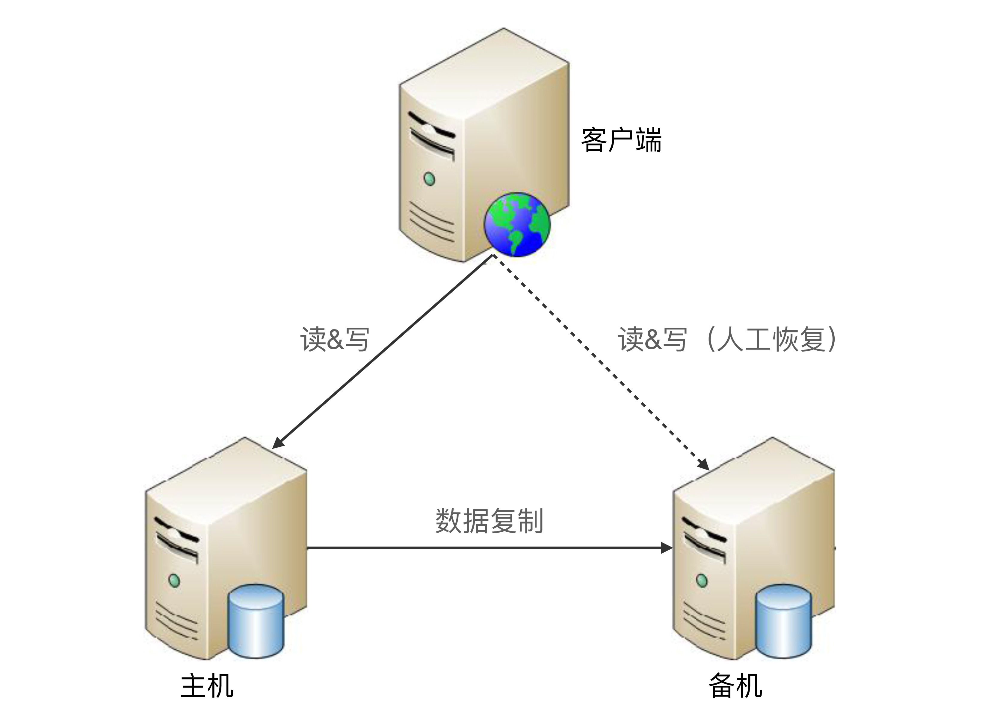
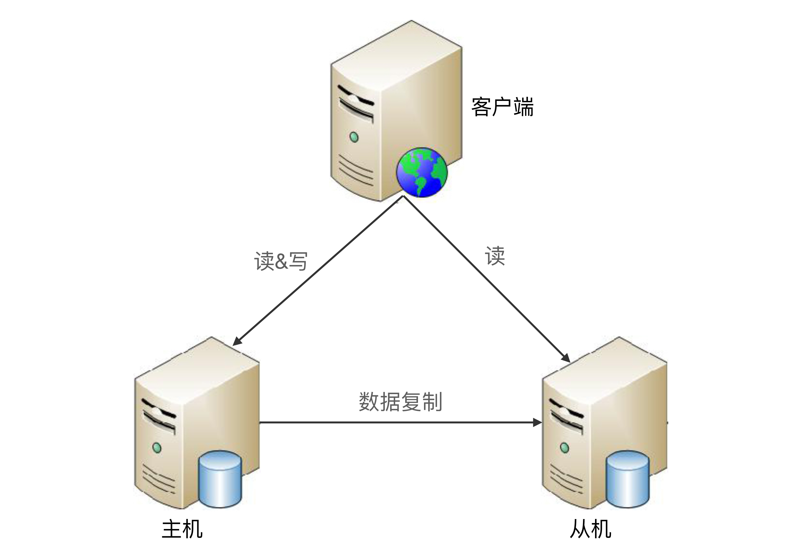
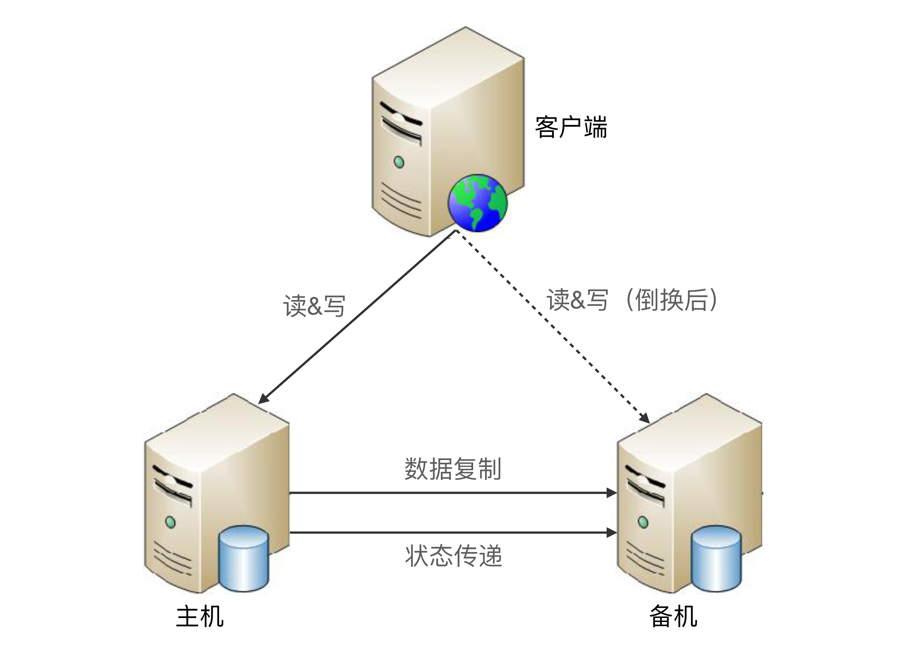
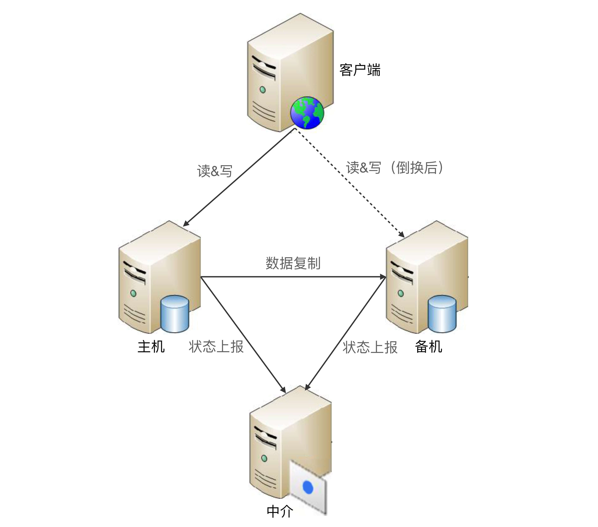
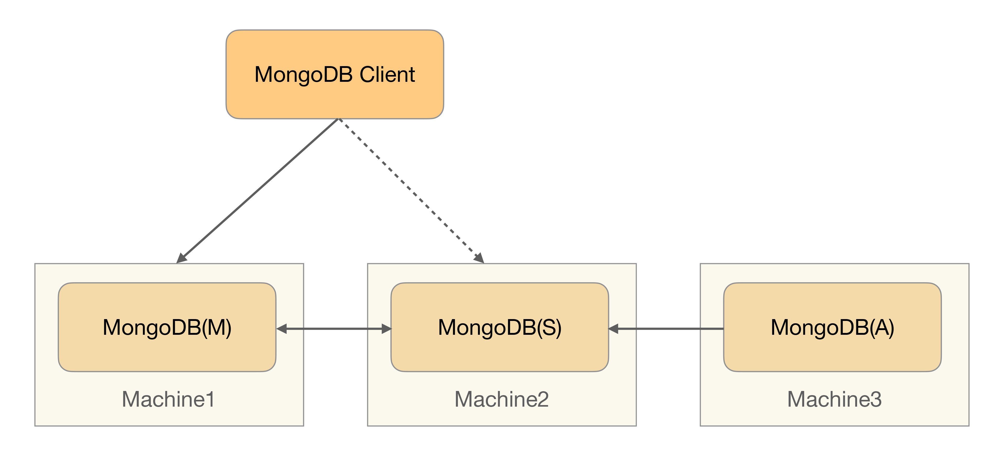
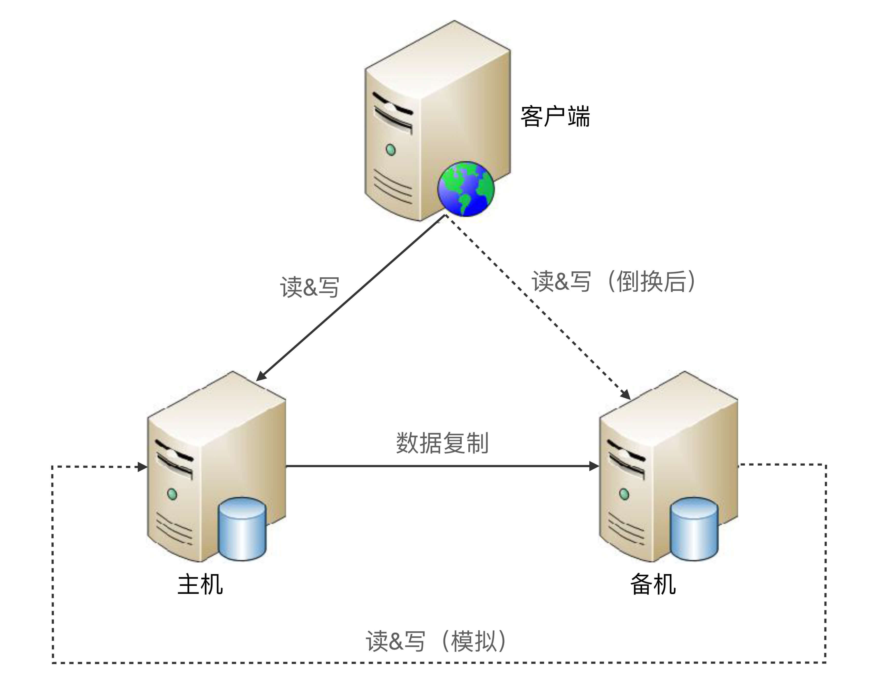
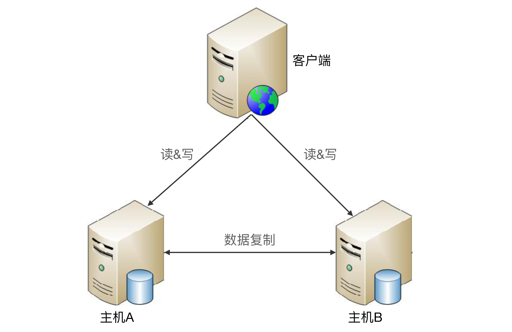

- 00 开篇词 照着做，你也能成为架构师！.md
- 01 架构到底是指什么？.md
- 02 架构设计的历史背景.md
- 03 架构设计的目的.md
- 04 复杂度来源：高性能.md
- 05 复杂度来源：高可用.md
- 06 复杂度来源：可扩展性.md
- 07 复杂度来源：低成本、安全、规模.md
- 08 架构设计三原则.md
- 09 架构设计原则案例.md
- 10 架构设计流程：识别复杂度.md
- 11 架构设计流程：设计备选方案.md
- 12 架构设计流程：评估和选择备选方案.md
- 13 架构设计流程：详细方案设计.md
- 14 高性能数据库集群：读写分离.md
- 15 高性能数据库集群：分库分表.md
- 16 高性能NoSQL.md
- 17 高性能缓存架构.md
- 18 单服务器高性能模式：PPC与TPC.md
- 19 单服务器高性能模式：Reactor与Proactor.md
- 20 高性能负载均衡：分类及架构.md
- 21 高性能负载均衡：算法.md
- 22 想成为架构师，你必须知道CAP理论.md
- 23 想成为架构师，你必须掌握的CAP细节.md
- 24 FMEA方法，排除架构可用性隐患的利器.md
- 25 高可用存储架构：双机架构.md
- 26 高可用存储架构：集群和分区.md
- 27 如何设计计算高可用架构？.md
- 28 业务高可用的保障：异地多活架构.md
- 29 异地多活设计4大技巧.md
- 30 异地多活设计4步走.md
- 31 如何应对接口级的故障？.md
- 32 可扩展架构的基本思想和模式.md
- 33 传统的可扩展架构模式：分层架构和SOA.md
- 34 深入理解微服务架构：银弹 or 焦油坑？.md
- 35 微服务架构最佳实践 - 方法篇.md
- 36 微服务架构最佳实践 - 基础设施篇.md
- 37 微内核架构详解.md
- 38 架构师应该如何判断技术演进的方向？.md
- 39 互联网技术演进的模式.md
- 40 互联网架构模板：存储层技术.md
- 41 互联网架构模板：开发层和服务层技术.md
- 42 互联网架构模板：网络层技术.md
- 43 互联网架构模板：用户层和业务层技术.md
- 44 互联网架构模板：平台技术.md
- 45 架构重构内功心法第一式：有的放矢.md
- 46 架构重构内功心法第二式：合纵连横.md
- 47 架构重构内功心法第三式：运筹帷幄.md
- 48 再谈开源项目：如何选择、使用以及二次开发？.md
- 49 谈谈App架构的演进.md
- 50 架构实战：架构设计文档模板.md
- 51 如何画出优秀的软件系统架构图？.md
- 加餐｜业务架构实战营开营了.md
- 加餐｜单服务器高性能模式性能对比.md
- 加餐｜扒一扒中台皇帝的外衣.md
- 如何高效地学习开源项目 华仔，放学别走！ 第3期.md
- 新书首发 《从零开始学架构》.md
- 架构专栏特别放送 华仔，放学别走！ 第2期.md
- 架构专栏特别放送 华仔，放学别走！第1期.md
- 架构师必读书单 华仔，放学别走！ 第5期.md
- 架构师成长之路 华仔，放学别走！ 第4期.md
- 结束语 坚持，成就你的技术梦想.md
25 高可用存储架构：双机架构
存储高可用方案的本质都是通过将数据复制到多个存储设备，通过数据冗余的方式来实现高可用，其复杂性主要体现在如何应对复制延迟和中断导致的数据不一致问题。因此，对任何一个高可用存储方案，我们需要从以下几个方面去进行思考和分析：
- 数据如何复制？
- 各个节点的职责是什么？
- 如何应对复制延迟？
- 如何应对复制中断？
常见的高可用存储架构有主备、主从、主主、集群、分区，每一种又可以根据业务的需求进行一些特殊的定制化功能，由此衍生出更多的变种。由于不同业务的定制功能难以通用化，今天我将针对业界通用的方案，来分析常见的双机高可用架构：主备、主从、主备/主从切换和主主。
主备复制
主备复制是最常见也是最简单的一种存储高可用方案，几乎所有的存储系统都提供了主备复制的功能，例如MySQL、Redis、MongoDB等。
1.基本实现
下面是标准的主备方案结构图：

其整体架构比较简单，主备架构中的“备机”主要还是起到一个备份作用，并不承担实际的业务读写操作，如果要把备机改为主机，需要人工操作。
2.优缺点分析
主备复制架构的优点就是简单，表现有：
- 对于客户端来说，不需要感知备机的存在，即使灾难恢复后，原来的备机被人工修改为主机后，对于客户端来说，只是认为主机的地址换了而已，无须知道是原来的备机升级为主机。
- 对于主机和备机来说，双方只需要进行数据复制即可，无须进行状态判断和主备切换这类复杂的操作。
主备复制架构的缺点主要有：
- 备机仅仅只为备份，并没有提供读写操作，硬件成本上有浪费。
- 故障后需要人工干预，无法自动恢复。人工处理的效率是很低的，可能打电话找到能够操作的人就耗费了10分钟，甚至如果是深更半夜，出了故障都没人知道。人工在执行恢复操作的过程中也容易出错，因为这类操作并不常见，可能1年就2、3次，实际操作的时候很可能遇到各种意想不到的问题。
综合主备复制架构的优缺点，内部的后台管理系统使用主备复制架构的情况会比较多，例如学生管理系统、员工管理系统、假期管理系统等，因为这类系统的数据变更频率低，即使在某些场景下丢失数据，也可以通过人工的方式补全。
主从复制
主从复制和主备复制只有一字之差，“从”意思是“随从、仆从”，“备”的意思是备份。我们可以理解为仆从是要帮主人干活的，这里的干活就是承担“读”的操作。也就是说，主机负责读写操作，从机只负责读操作，不负责写操作。
1.基本实现
下面是标准的主从复制架构：

与主备复制架构比较类似，主要的差别点在于从机正常情况下也是要提供读的操作。
2.优缺点分析
主从复制与主备复制相比，优点有：
- 主从复制在主机故障时，读操作相关的业务可以继续运行。
- 主从复制架构的从机提供读操作，发挥了硬件的性能。
缺点有：
- 主从复制架构中，客户端需要感知主从关系，并将不同的操作发给不同的机器进行处理，复杂度比主备复制要高。
- 主从复制架构中，从机提供读业务，如果主从复制延迟比较大，业务会因为数据不一致出现问题。
- 故障时需要人工干预。
综合主从复制的优缺点，一般情况下，写少读多的业务使用主从复制的存储架构比较多。例如，论坛、BBS、新闻网站这类业务，此类业务的读操作数量是写操作数量的10倍甚至100倍以上。
双机切换
1.设计关键
主备复制和主从复制方案存在两个共性的问题：
- 主机故障后，无法进行写操作。
- 如果主机无法恢复，需要人工指定新的主机角色。
双机切换就是为了解决这两个问题而产生的，包括主备切换和主从切换两种方案。简单来说，这两个方案就是在原有方案的基础上增加“切换”功能，即系统自动决定主机角色，并完成角色切换。由于主备切换和主从切换在切换的设计上没有差别，我接下来以主备切换为例，一起来看看双机切换架构是如何实现的。
要实现一个完善的切换方案，必须考虑这几个关键的设计点：
- 主备间状态判断
主要包括两方面：状态传递的渠道，以及状态检测的内容。
状态传递的渠道：是相互间互相连接，还是第三方仲裁？
状态检测的内容：例如机器是否掉电、进程是否存在、响应是否缓慢等。
- 切换决策
主要包括几方面：切换时机、切换策略、自动程度。
切换时机：什么情况下备机应该升级为主机？是机器掉电后备机才升级，还是主机上的进程不存在就升级，还是主机响应时间超过2秒就升级，还是3分钟内主机连续重启3次就升级等。
切换策略：原来的主机故障恢复后，要再次切换，确保原来的主机继续做主机，还是原来的主机故障恢复后自动成为新的备机？
自动程度：切换是完全自动的，还是半自动的？例如，系统判断当前需要切换，但需要人工做最终的确认操作（例如，单击一下“切换”按钮）。
- 数据冲突解决
当原有故障的主机恢复后，新旧主机之间可能存在数据冲突。例如，用户在旧主机上新增了一条ID为100的数据，这个数据还没有复制到旧的备机，此时发生了切换，旧的备机升级为新的主机，用户又在新的主机上新增了一条ID为100的数据，当旧的故障主机恢复后，这两条ID都为100的数据，应该怎么处理？
以上设计点并没有放之四海而皆准的答案，不同的业务要求不一样，所以切换方案比复制方案不只是多了一个切换功能那么简单，而是复杂度上升了一个量级。形象点来说，如果复制方案的代码是1000行，那么切换方案的代码可能就是10000行，多出来的那9000行就是用于实现上面我所讲的3个设计点的。
2.常见架构
根据状态传递渠道的不同，常见的主备切换架构有三种形式：互连式、中介式和模拟式。
互连式
故名思议，互连式就是指主备机直接建立状态传递的渠道，架构图请注意与主备复制架构对比。

你可以看到，在主备复制的架构基础上，主机和备机多了一个“状态传递”的通道，这个通道就是用来传递状态信息的。这个通道的具体实现可以有很多方式：
- 可以是网络连接（例如，各开一个端口），也可以是非网络连接（用串口线连接）。
- 可以是主机发送状态给备机，也可以是备机到主机来获取状态信息。
- 可以和数据复制通道共用，也可以独立一条通道。
- 状态传递通道可以是一条，也可以是多条，还可以是不同类型的通道混合（例如，网络+串口）。
为了充分利用切换方案能够自动决定主机这个优势，客户端这里也会有一些相应的改变，常见的方式有：
- 为了切换后不影响客户端的访问，主机和备机之间共享一个对客户端来说唯一的地址。例如虚拟IP，主机需要绑定这个虚拟的IP。
- 客户端同时记录主备机的地址，哪个能访问就访问哪个；备机虽然能收到客户端的操作请求，但是会直接拒绝，拒绝的原因就是“备机不对外提供服务”。
互连式主备切换主要的缺点在于：
- 如果状态传递的通道本身有故障（例如，网线被人不小心踢掉了），那么备机也会认为主机故障了从而将自己升级为主机，而此时主机并没有故障，最终就可能出现两个主机。
- 虽然可以通过增加多个通道来增强状态传递的可靠性，但这样做只是降低了通道故障概率而已，不能从根本上解决这个缺点，而且通道越多，后续的状态决策会更加复杂，因为对备机来说，可能从不同的通道收到了不同甚至矛盾的状态信息。
中介式
中介式指的是在主备两者之外引入第三方中介，主备机之间不直接连接，而都去连接中介，并且通过中介来传递状态信息，其架构图如下：

对比一下互连式切换架构，我们可以看到，主机和备机不再通过互联通道传递状态信息，而是都将状态上报给中介这一角色。单纯从架构上看，中介式似乎比互连式更加复杂了，首先要引入中介，然后要各自上报状态。然而事实上，中介式架构在状态传递和决策上却更加简单了，这是为何呢？
连接管理更简单：主备机无须再建立和管理多种类型的状态传递连接通道，只要连接到中介即可，实际上是降低了主备机的连接管理复杂度。
例如，互连式要求主机开一个监听端口，备机来获取状态信息；或者要求备机开一个监听端口，主机推送状态信息到备机；如果还采用了串口连接，则需要增加串口连接管理和数据读取。采用中介式后，主备机都只需要把状态信息发送给中介，或者从中介获取对方的状态信息。无论是发送还是获取，主备机都是作为中介的客户端去操作，复杂度会降低。
状态决策更简单：主备机的状态决策简单了，无须考虑多种类型的连接通道获取的状态信息如何决策的问题，只需要按照下面简单的算法即可完成状态决策。
- 无论是主机还是备机，初始状态都是备机，并且只要与中介断开连接，就将自己降级为备机，因此可能出现双备机的情况。
- 主机与中介断连后，中介能够立刻告知备机，备机将自己升级为主机。
- 如果是网络中断导致主机与中介断连，主机自己会降级为备机，网络恢复后，旧的主机以新的备机身份向中介上报自己的状态。
- 如果是掉电重启或者进程重启，旧的主机初始状态为备机，与中介恢复连接后，发现已经有主机了，保持自己备机状态不变。
- 主备机与中介连接都正常的情况下，按照实际的状态决定是否进行切换。例如，主机响应时间超过3秒就进行切换，主机降级为备机，备机升级为主机即可。
虽然中介式架构在状态传递和状态决策上更加简单，但并不意味着这种优点是没有代价的，其关键代价就在于如何实现中介本身的高可用。如果中介自己宕机了，整个系统就进入了双备的状态，写操作相关的业务就不可用了。这就陷入了一个递归的陷阱：为了实现高可用，我们引入中介，但中介本身又要求高可用，于是又要设计中介的高可用方案……如此递归下去就无穷无尽了。
MongoDB的Replica Set采取的就是这种方式，其基本架构如下：

MongoDB(M)表示主节点，MongoDB(S)表示备节点，MongoDB(A)表示仲裁节点。主备节点存储数据，仲裁节点不存储数据。客户端同时连接主节点与备节点，不连接仲裁节点。
幸运的是，开源方案已经有比较成熟的中介式解决方案，例如ZooKeeper和Keepalived。ZooKeeper本身已经实现了高可用集群架构，因此已经帮我们解决了中介本身的可靠性问题，在工程实践中推荐基于ZooKeeper搭建中介式切换架构。
模拟式
模拟式指主备机之间并不传递任何状态数据，而是备机模拟成一个客户端，向主机发起模拟的读写操作，根据读写操作的响应情况来判断主机的状态。其基本架构如下：

对比一下互连式切换架构，我们可以看到，主备机之间只有数据复制通道，而没有状态传递通道，备机通过模拟的读写操作来探测主机的状态，然后根据读写操作的响应情况来进行状态决策。
模拟式切换与互连式切换相比，优点是实现更加简单，因为省去了状态传递通道的建立和管理工作。
简单既是优点，同时也是缺点。因为模拟式读写操作获取的状态信息只有响应信息（例如，HTTP 404，超时、响应时间超过3秒等），没有互连式那样多样（除了响应信息，还可以包含CPU负载、I/O负载、吞吐量、响应时间等），基于有限的状态来做状态决策，可能出现偏差。
主主复制
主主复制指的是两台机器都是主机，互相将数据复制给对方，客户端可以任意挑选其中一台机器进行读写操作，下面是基本架构图。

相比主备切换架构，主主复制架构具有如下特点：
- 两台都是主机，不存在切换的概念。
- 客户端无须区分不同角色的主机，随便将读写操作发送给哪台主机都可以。
从上面的描述来看，主主复制架构从总体上来看要简单很多，无须状态信息传递，也无须状态决策和状态切换。然而事实上主主复制架构也并不简单，而是有其独特的复杂性，具体表现在：如果采取主主复制架构，必须保证数据能够双向复制，而很多数据是不能双向复制的。例如：
- 用户注册后生成的用户ID，如果按照数字增长，那就不能双向复制，否则就会出现X用户在主机A注册，分配的用户ID是100，同时Y用户在主机B注册，分配的用户ID也是100，这就出现了冲突。
- 库存不能双向复制。例如，一件商品库存100件，主机A上减了1件变成99，主机B上减了2件变成98，然后主机A将库存99复制到主机B，主机B原有的库存98被覆盖，变成了99，而实际上此时真正的库存是97。类似的还有余额数据。
因此，主主复制架构对数据的设计有严格的要求，一般适合于那些临时性、可丢失、可覆盖的数据场景。例如，用户登录产生的session数据（可以重新登录生成）、用户行为的日志数据（可以丢失）、论坛的草稿数据（可以丢失）等。
小结
今天我为你讲了高可用存储架构中常见的双机架构，分析了每类架构的优缺点以及适应场景，希望对你有所帮助。
这就是今天的全部内容，留一道思考题给你吧，如果你来设计一个政府信息公开网站的信息存储系统，你会采取哪种架构？谈谈你的分析和理由。
© 2019 - 2023 Liangliang Lee. Powered by gin and hexo-theme-book.